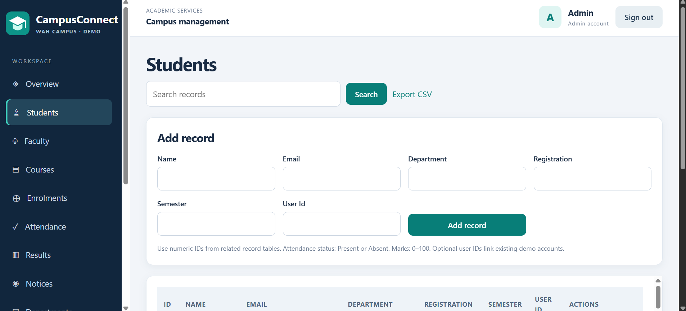
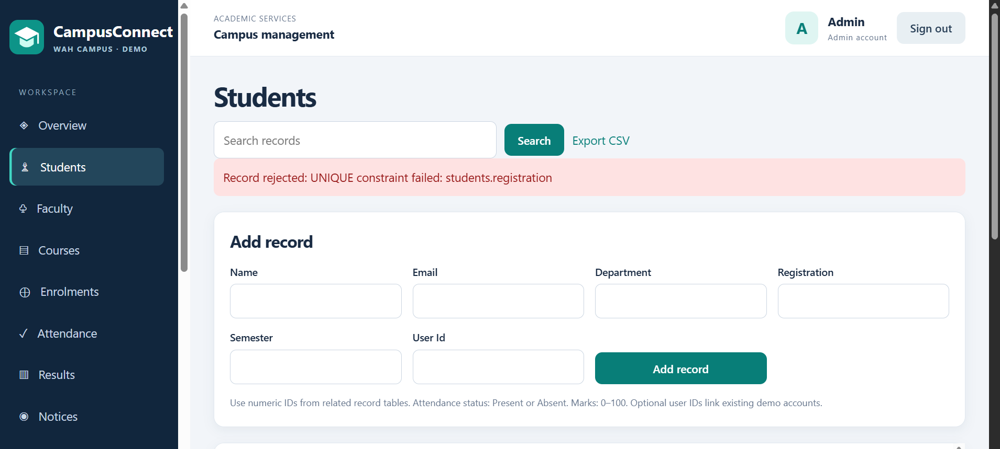
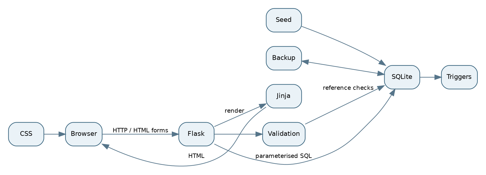
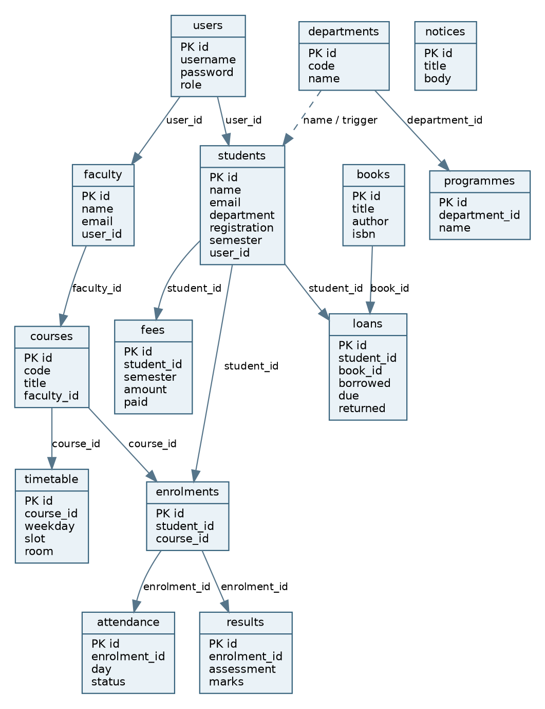
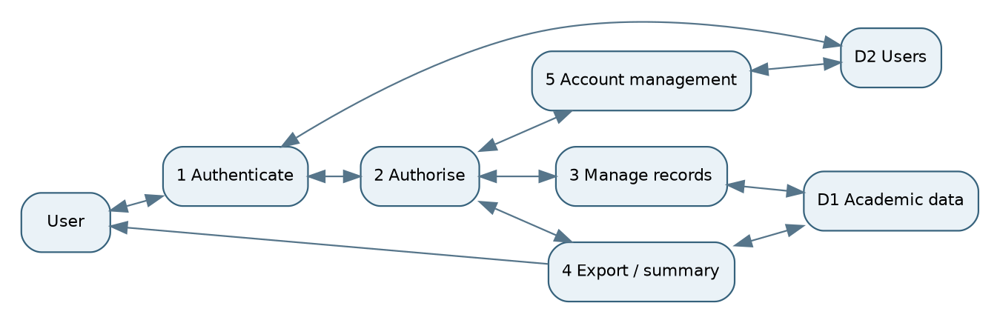

CampusConnect V4 — University Management System

Project overview
CampusConnect is a full-stack web application for centralised academic and administrative record management. It reconstructs and extends the original undergraduate Student Management Portal at COMSATS University Islamabad, Wah Campus (original FYP supervisor: Dr. Waqar Khan). Version 4 is a later enhanced implementation, not the original university submission.
Problem statement and objectives
Fragmented academic records make it difficult to maintain consistent student, course and assessment information. The project demonstrates a unified relational database, role-specific workflows, validation and reproducible local deployment.
Technology stack
Implementation and methodology
The application uses server-rendered Jinja templates, Flask request handlers and parameterised SQLite queries. Requirements analysis, database modelling, iterative implementation and validation underpin the design. The system supports three roles: administrators manage records and accounts; faculty manage assigned attendance and results; students view their own academic records and permitted shared resources.
Functional modules
- Students
- Registration, contact details, department and semester records.
- Faculty
- Faculty profiles and linked accounts.
- Courses
- Course codes, titles and faculty assignments.
- Enrolments
- Student-to-course relationships.
- Attendance
- Daily attendance per enrolment.
- Results
- Assessment names and marks per enrolment.
- Notices
- Shared academic announcements.
- Departments
- Department codes and names.
- Programmes
- Academic programmes associated with departments.
- Fees
- Semester fee amounts and payment records.
- Books
- Library catalogue and ISBN records.
- Loans
- Borrowing, due dates and returns.
- Timetable
- Course, weekday, slot and room allocation.
Security and data integrity
Password hashing, role-scoped access, CSRF protection, parameterised queries, input validation, foreign keys and uniqueness constraints support record integrity. Offline backup and restore utilities support maintenance. The system is a local demonstration, not a production deployment.
Evaluation
The deterministic synthetic dataset contains 1,000 students, 80 faculty, 120 courses, 4,000 enrolments, 32,000 attendance records and 12,000 assessment results. Nine validation tests and one seed-integrity test passed in the recorded V4 test run. Four HTTP regression tests remain unverified. No production performance or security certification is claimed.
Application screenshots
Genuine screenshots from the earlier CampusConnect development and testing session (V3). V4 extends this interface; additional V4 screenshots can be added after capture.




System design and technical diagrams








Conclusion and future development
CampusConnect demonstrates requirements engineering, full-stack development, relational modelling and software quality practices. Future work includes completing HTTP regression testing, improving account lifecycle management and evaluating deployment security and performance. The assessment summary is unofficial and does not calculate GPA.
Final Year Project Report
Open full PDF in new tab Download PDF
If the embedded PDF is unavailable, use the open or download link.
Software Design and Technical Documentation
Open full PDF in new tab Download PDF
If the embedded PDF is unavailable, use the open or download link.
Source code and project files
Explore the implementation and local installation instructions on GitHub.
View project on GitHub ↗